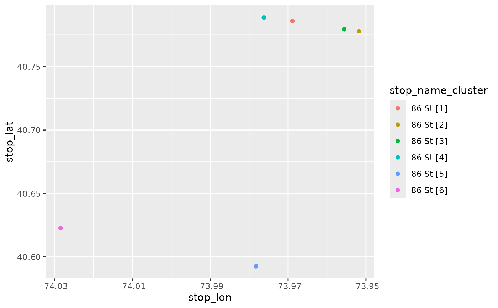

Finds clusters of stops for each unique value in group_col (e.g. stop_name). Can
be used to find different groups of stops that share the same name but are located more
than max_dist apart. gtfs_stops is assigned a new column (named cluster_colname)
which contains the group_col value and the cluster number.
cluster_stops(
gtfs_stops,
max_dist = 300,
group_col = "stop_name",
cluster_colname = "stop_name_cluster"
)Stops table of a gtfs object. It is also possible to pass a tidygtfs object to enable piping.
Only stop groups that have a maximum distance among them above this threshold (in meters) are clustered.
Clusters for are calculated for each set of stops with the same value in this column (default: stop_name)
Name of the new column name. Can be the same as group_col to overwrite.
Returns a stops table with an added cluster column. If gtfs_stops is a tidygtfs object, a
modified tidygtfs object is return
stats::kmeans() is used for clustering.
# \donttest{
library(dplyr)
#>
#> Attaching package: ‘dplyr’
#> The following objects are masked from ‘package:stats’:
#>
#> filter, lag
#> The following objects are masked from ‘package:base’:
#>
#> intersect, setdiff, setequal, union
nyc_path <- system.file("extdata", "google_transit_nyc_subway.zip", package = "tidytransit")
nyc <- read_gtfs(nyc_path)
nyc <- cluster_stops(nyc)
# There are 6 stops with the name "86 St" that are far apart
stops_86_St = nyc$stops %>%
filter(stop_name == "86 St")
table(stops_86_St$stop_name_cluster)
#>
#> 86 St [1] 86 St [2] 86 St [3] 86 St [4] 86 St [5] 86 St [6]
#> 3 3 3 3 3 3
#> 86 St [1] 86 St [2] 86 St [3] 86 St [4] 86 St [5] 86 St [6]
#> 3 3 3 3 3 3
stops_86_St %>% select(stop_id, stop_name, parent_station, stop_name_cluster) %>% head()
#> # A tibble: 6 × 4
#> stop_id stop_name parent_station stop_name_cluster
#> <chr> <chr> <chr> <chr>
#> 1 121 86 St "" 86 St [4]
#> 2 121N 86 St "121" 86 St [4]
#> 3 121S 86 St "121" 86 St [4]
#> 4 626 86 St "" 86 St [1]
#> 5 626N 86 St "626" 86 St [1]
#> 6 626S 86 St "626" 86 St [1]
#> # A tibble: 6 × 4
#> stop_id stop_name parent_station stop_name_cluster
#> <chr> <chr> <chr> <chr>
#> 1 121 86 St "" 86 St [3]
#> 2 121N 86 St "121" 86 St [3]
#> 3 121S 86 St "121" 86 St [3]
#> 4 626 86 St "" 86 St [4]
#> 5 626N 86 St "626" 86 St [4]
#> 6 626S 86 St "626" 86 St [4]
library(ggplot2)
ggplot(stops_86_St) +
geom_point(aes(stop_lon, stop_lat, color = stop_name_cluster))

# }